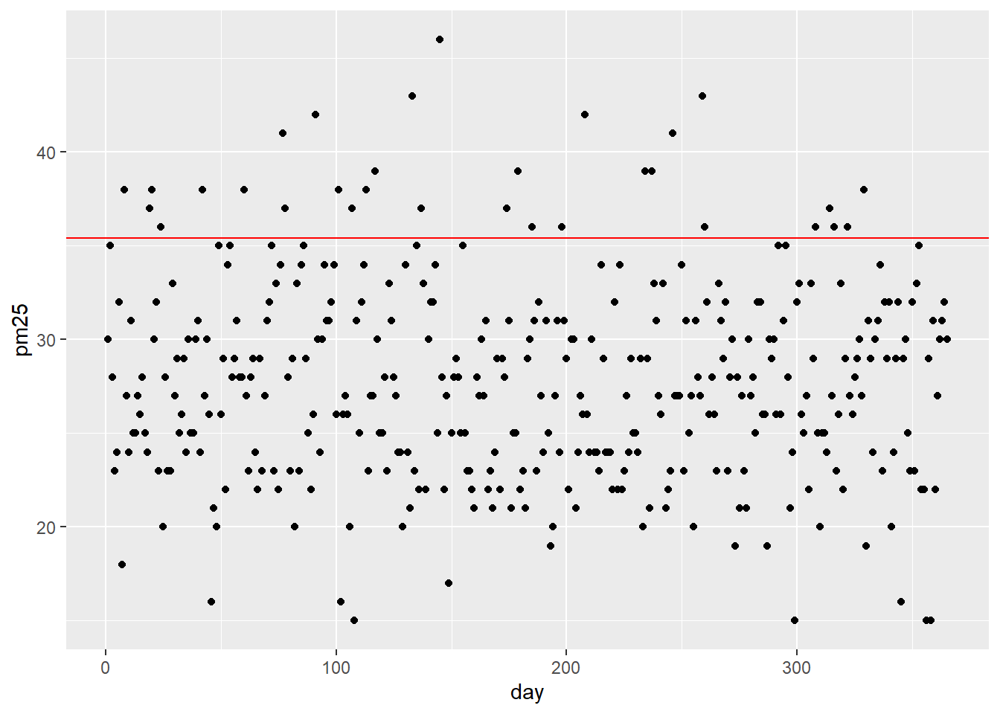
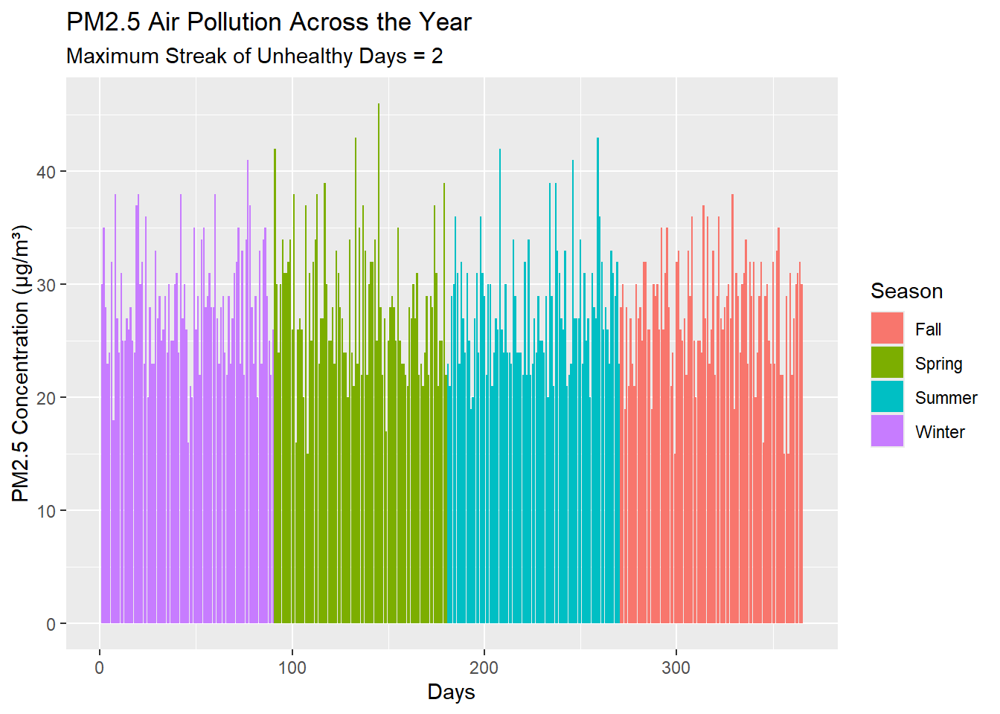
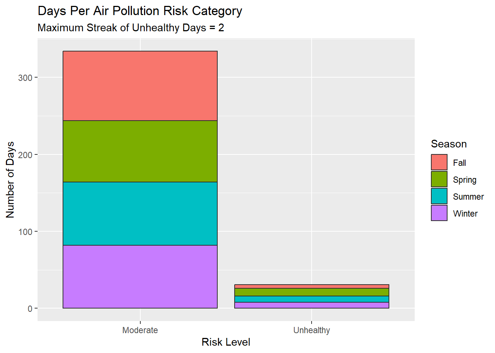

#generate data for day and PM 2.5 levels
day <- seq(1,365,1)
pm25 <- rpois(365, 28)
air_start <- data.frame(day, pm25)Assignment 3: Air Quality and For Loop
Part 1 – Build the Dataset
To explore data with a higher number of “unhealthy days”, I chose to simulate the air in a region that is prone to wildfires year-round. Based on the PM2.5 levels measured in the 2025 Letellier et al. study, Applying a two-stage generalized synthetic control approach to quantify the heterogeneous health effects of extreme weather events: A 2018 large wildfire in California event as a case study, I set lambda to 28 to simulate higher ambient levels of PM2.5.
The study can be accessed here: https://doi.org/10.1097/ee9.0000000000000362.
#check data to make sure it's realistic
mean(air_start$pm25)[1] 27.77808ggplot(air_start, aes(x=day, y=pm25)) +
geom_point() +
geom_hline(yintercept = 35.4, color = "red")
# generate data for season as a factor, and risk
air_data <- air_start |>
mutate(season = case_when(
day >= 271 ~ "Fall",
day >= 181 ~ "Summer",
day >= 91 ~ "Spring",
TRUE ~ "Winter")) |>
mutate(season = as.factor(season)) |>
mutate(risk = NA)Part 2 – Classify Risk with a For Loop
# add in risk classification
for (i in 1:365) {
air_data$risk[i] = case_when(
air_data$pm25[i] < 12 ~ "Good",
air_data$pm25[i] > 35.4 ~ "Unhealthy",
air_data$pm25[i] <= 35.4 ~ "Moderate",
TRUE ~ "NA"
)
}# create empty column for "streak" of unhealthy days with zeros
air_data <- air_data |> mutate(streak = 0)
# track the longest consecutive streak of "unhealthy" days
for (i in 2:365) {
if (air_data$risk[i-1] == "Unhealthy") {
air_data$streak[i] = air_data$streak[i-1] + 1}
else(air_data$streak[i] = 0)
}
max_unhealthy_streak <- max(air_data$streak)
max_unhealthy_streak[1] 2Part 3 – Seasonal Summary with a For Loop
# Write a for loop that computes number of days in each season that fall into unhealthy risk category
num_winter_unhealthy = 0
num_spring_unhealthy = 0
num_fall_unhealthy = 0
num_summer_unhealthy = 0
for (i in 1:365) {
if (i < 91) {
num_winter_unhealthy = num_winter_unhealthy + ifelse(air_data$risk[i] == "Unhealthy", 1, 0)}
if (i < 181) {
num_spring_unhealthy = num_spring_unhealthy + ifelse(air_data$risk[i] == "Unhealthy", 1, 0)}
if (i >=271) {
num_fall_unhealthy = num_fall_unhealthy + ifelse(air_data$risk[i] == "Unhealthy", 1, 0)}
if (i >= 181) {
num_summer_unhealthy = num_summer_unhealthy + ifelse(air_data$risk[i] == "Unhealthy", 1, 0)}
}
total_unhealthy <- num_winter_unhealthy + num_spring_unhealthy + num_summer_unhealthy + num_fall_unhealthy
percent_unhealthy <- (total_unhealthy/365)*100
#Results in a table
seasons <- c("Winter", "Spring", "Summer", "Fall")
unhealth <- c(num_winter_unhealthy, num_spring_unhealthy, num_summer_unhealthy, num_fall_unhealthy)
percent_unh <- c(num_winter_unhealthy/365*100, num_spring_unhealthy/365*100, num_summer_unhealthy/365*100, num_fall_unhealthy/365*100)
results_unhealthy <- data.frame(
"seasons" = seasons,
"Number of Unhealthy Days" = unhealth,
"Percent of All Days" = percent_unh,
check.names = FALSE
)print(results_unhealthy) seasons Number of Unhealthy Days Percent of All Days
1 Winter 8 2.191781
2 Spring 18 4.931507
3 Summer 13 3.561644
4 Fall 5 1.369863Part 4 – Visualize and Report
#1 A time series or histogram showing PM2.5 concentration across the year, colored or faceted by season
time_plot <- ggplot(air_data, aes(x = day, y = pm25, fill = season)) +
geom_bar(stat = "identity") +
labs(
title = "PM2.5 Air Pollution Across the Year",
subtitle = sprintf("Maximum Streak of Unhealthy Days = %d", max_unhealthy_streak),
x = "Days",
y = "PM2.5 Concentration (µg/m³)",
fill = "Season"
)
time_plot
#2 A bar chart showing the count of days in each risk category
risk_plot <- ggplot(air_data, aes(x = risk, fill = season)) +
geom_histogram(stat="count", color = "gray18") +
labs(
title = "Days Per Air Pollution Risk Category",
subtitle = sprintf("Maximum Streak of Unhealthy Days = %d", max_unhealthy_streak),
x = "Risk Level",
y = "Number of Days",
fill = "Season"
)
risk_plot
Summary
The last year of air quality monitoring data shows several useful trends. First, there were no days within the last year that had “good” air quality; 87.1% of days (318) had “moderate” air quality, while 12.9% of days (47) had “unhealthy” air quality. Long-term air quality interventions are necessary to reduce the impacts of chronic air pollution on human health and the environment, and to increase the number of days with “good” air quality. However, despite the prevalence of wildfires, there appears to be low acute health risk because the maximum number of days with “unhealthy” PM2.5 levels is two consecutive days. Across seasons, there is little variation in the number of “moderate” or “unhealthy” days. Because each season has roughly the same number of “moderate” and “unhealthy” days, this suggests that the sources of air pollution are somewhat constant throughout the changing seasons.